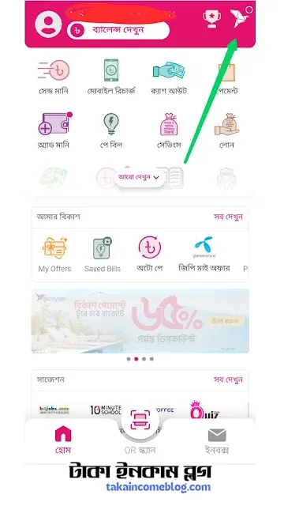
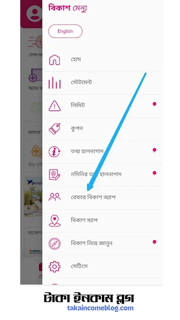
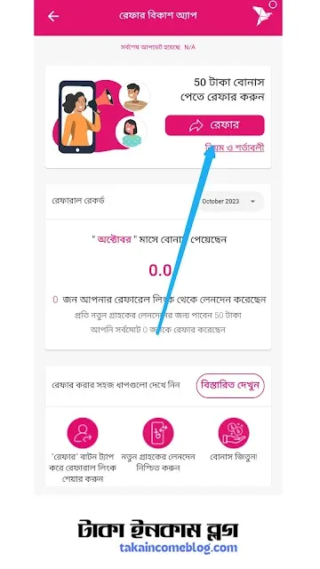

আপনি কি বিকাশে ১০০০ টাকা ফ্রি নিতে চাচ্ছেন? আপনি কি বিকাশ থেকে ১০০০ টাকা বোনাস নিবেন? তাহলে একদম ঠিক জায়গায় এসে পড়েছেন। চলুন এ বিষয়ে বিস্তারিত তথ্য জেনে নেই। বর্তমান সময়ে একজন বিকাশ অ্যাপ ব্যবহারকারী ঘরে বসে বিকাশ থেকে অনেক টাকা ফ্রি নিতে পারবে। তাই আপনিও যদি একজন বিকাশ অ্যাপ ব্যবহারকারী হয়ে থাকেন। তাহলে দেরি না করে মনোযোগ সহকারে আজকের মনোযোগ সহকারে পড়তে থাকুন। আর কিভাবে বিকাশে ১০০০ টাকা ফ্রি নেয়া যায় তা জানুন। বিকাশে ১০০০ টাকা ফ্রি বর্তমানে বিকাশ থেকে আপনি ১০০০ টাকা চেয়েও অনেক টাকা ফ্রিতে নিতে পারবেন। সাম্প্রতিক সময়ে বিকাশ মোবাইল ব্যাংকিং সেবা একটি দারুন অফার চালু করেছে। বর্তমানে বিকাশে চলছে বিকাশ অ্যাপ রেফার অফার। আপনি যদি যেকোন নন বিকাশ গ্রাহককে বিকাশ অ্যাপ ব্যবহার করাতে পারেন। তাহলে প্রতিটা রেফারের জন্য পাবেন ৫০ টাকা বোনাস। এখন আপনি যদি প্রতিদিন ১০ জন নন-বিকাশ গ্রাহককে বিকাশ অ্যাপ ব্যবহার করাতে পারেন। তাহলে প্রতিদিন বিকাশ থেকে ফ্রিতে ৫০০ টাকা ইনকাম করতে পারবেন। আপনার হয়তো এ কথাটি বিশ্বাস হচ্ছে না। তবে প্রকৃতপক্ষে এটাই সঠিক ও সত্য খবর। নিচের লিংকে ক্লিক করে এ বিষয়ে সম্পর্কে বিস্তারিত জেনে নিন। bKash বিকাশ অ্যাপ রেফার করে ১০০০ টাকা ফ্রি নিন উপরের লিংকে ক্লিক করে আপনি নিশ্চয়ই জানতে পেরেছেন আসলেই বিকাশ অ্যাপ রেফার করে টাকা ইনকাম করা যায় কিনা। তবে কিভাবে বিকাশ অ্যাপ রেফার করতে হয় জেনে নিতে হবে।
ধাপ ১ঃ বিকাশ অ্যাপ রেফার করার জন্য সর্বপ্রথম আপনাকে মোবাইল নাম্বার ও পিন সংখ্যা দিয়ে বিকাশ অ্যাপ এ লগইন করতে হবে। তারপর আপনার সামনে বিকাশ অ্যাপের হোম পেজ চলে আসবে।
 ধাপ ২ঃ এ পর্যায়ে আপনাকে মার্ক করা পাখি আইকনে ক্লিক করতে হবে। তারপর "রেফার বিকাশ অ্যাপ" এ ক্লিক করুন। ঠিক নিচের ছবির মতো।
ধাপ ৩ঃ এই পেইজে আপনার বিকাশ অ্যাপ রেফারেল লিংক রয়েছে। এই লিংক আপনাকে কপি করতে হবে। লিংক কপি করার জন্য "রেফার" অপশনে ক্লিক করুন।
আপনি যখন রেফার অপশনে ক্লিক করবেন। তখন আপনার রেফারেল লিংক কপি হয়ে যাবে। এখন এই লিংক আপনাকে নন বিকাশ অ্যাপ ব্যবহার করে গ্রাহককে শেয়ার করতে হবে। আপনার শেয়ার করা লিংকের মাধ্যমে কোন ব্যক্তি যদি জাতীয় পরিচয় পত্রের মাধ্যমে বিকাশ একাউন্ট খুলে। তাহলে প্রতিটি অ্যাকাউন্ট খোলার জন্য আপনি ৫০ টাকা বোনাস পাবেন। পরিশেষে আজ আমরা জানলাম বিকাশে ১০০০ টাকা ফ্রি কিভাবে নিতে হয় তা সম্পর্কে। বন্ধুরা, আজকের আর্টিকেল কেমন লাগলো তা অবশ্যই কমেন্ট করে জানাবেন।